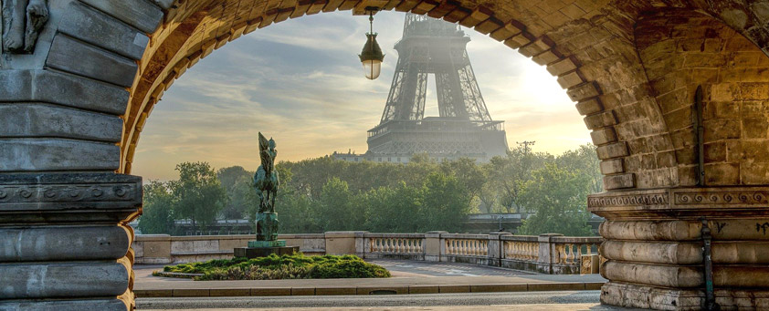

À propos de l'événement
L'événement a été créé pour célébrer et préserver le patrimoine historique de notre région. Depuis sa création en 2014, il a joué un rôle important dans la mise en valeur des sites historiques et culturels.
Objectifs
L'événement vise à sensibiliser le public à l'importance du patrimoine et à promouvoir la conservation des monuments historiques.
Acteurs clés
Les principaux acteurs impliqués sont Dr. Erwan Cariou et Mme. Inès MAAROUFI, en collaboration avec des institutions locales et des sponsors majeurs.
